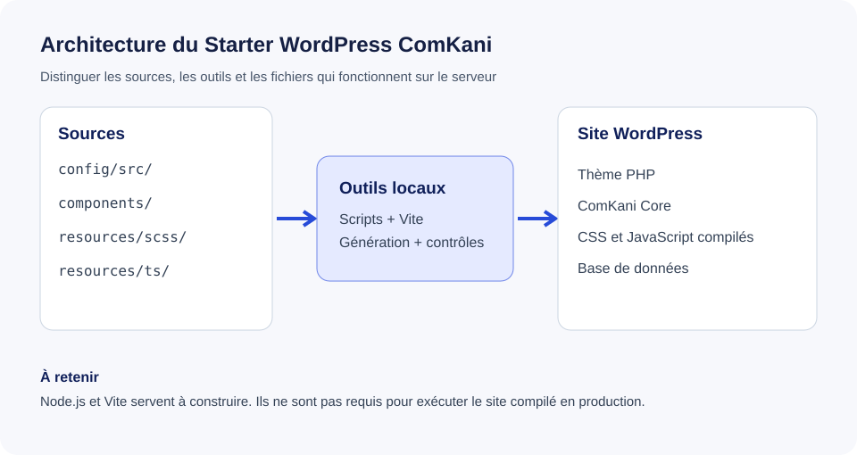

Bienvenue dans notre espace de développement des site sous WordPress
Un mot de Kani
Bienvenue dans le guide développeur de l'Agence ComKani.
J'ai souhaité créer cet espace pour que chacun puisse comprendre notre façon de construire des sites WordPress, retrouver les choix techniques de l'agence et avancer avec des repères communs. Que tu découvres notre environnement ou que tu travailles déjà dessus depuis plusieurs mois, ce guide est là pour t'accompagner.
Notre exigence technique doit toujours servir quelque chose de concret : des sites bien construits, une expérience soignée pour leurs utilisateurs et une administration claire pour nos clients. Nous privilégions les solutions solides, lisibles et réutilisables. Nous ne cherchons pas à ajouter des technologies pour le principe.
Ce guide est aussi un espace d'apprentissage. Quand une notion est complexe, nous prendrons le temps de l'expliquer simplement, de la replacer dans l'architecture et de montrer un exemple. L'objectif est que chacun comprenne ce qu'il fait, pourquoi il le fait et comment vérifier son travail.
Il évoluera avec nos pratiques. Chacun est invité à signaler une erreur, proposer une clarification ou partager une solution utile à l'équipe.
Bonne lecture et bon développement !
Kani Diarra - Fondatrice et directrice de l'Agence ComKani
À qui s'adresse ce guide ?
À toutes les personnes qui rejoignent ou contribuent au Digital Studio sur la partie Développement d'un site web au sein de l'Agence ComKani. Il ne dépend d'aucun collaborateur en particulier et n'est pas destiné aux clients.
Le périmètre du guide
Architecture, installation, développement, composants, ComKani Core, qualité du code, sécurité technique, tests, préproduction, production et dépannage.
Comprendre notre Starter WordPress
En quelques mots
Le Starter WordPress ComKani est notre base de développement commune. Ce n'est pas un site client prérempli : c'est un socle technique à initialiser pour chaque nouveau projet.
Imagine une boîte à outils organisée : nous y retrouvons nos fondations, des composants activables et les procédures nécessaires pour commencer un nouveau site sans réinventer les mêmes mécanismes.
Les quatre idées à retenir
- WordPress gère les contenus et l'administration accessible au client
- le thème Annonceur - ComKani organise l'affichage, les modèles et les ressources visuelles
- ComKani Core rassemble les fonctionnalités propriétaires de l'agence qui ne doivent pas dépendre de l'apparence du thème
- les outils de développement préparent, contrôlent et compilent les ressources sans devenir nécessairement obligatoires sur l'hébergement en production
Ce que nous souhaitons préserver
Une installation simple, un code maintenable, un chargement maîtrisé des composants, une administration claire et des livrables compatibles avec les hébergements WordPress classiques.
Ce qui est encore en chantier
La neutralisation complète des contenus historiques, le chargement conditionnel des ressources de chaque composant et la validation fonctionnelle de tous les modules de ComKani Core restent à finaliser. Ne considère pas le starter comme prêt pour une livraison client avant la recette complète.
Comprendre notre architecture
Vue d'ensemble

Le schéma distingue ce qui sert à développer de ce qui sert à faire fonctionner le site. C'est une distinction importante : un outil présent sur nos ordinateur n'a pas nécessairement besoin d'être installé sur le serveur du client.
Les dossiers à connaître
| Dossier | Ce qu'on y trouve | Quand y intervenir |
|---|---|---|
config/src/ | les paramètres source du projet | initialisation ou modification de fonctionnalités |
config/generated/ | la configuration produite par les scripts | ATTENTION : ne pas éditer directement |
components/ | les composants réutilisables du thème | ajout ou adaptation d'un composant |
packages/comkani-core/ | les fonctions propriétaires de l'agence sur WordPress | évolution d'une fonctionnalité transversale |
resources/scss/ | le système de styles source | ajustement des styles |
resources/ts/ | les interactions front-end | développement d'un comportement interactif |
scripts/ | les outils de génération, de contrôle et de packaging | maintenance de l'outillage |
assets/build/ | les fichiers compilés livrables | vérifier le build, ATTENTION : ne pas modifier directement |
docs/ | le guide interne destiné à l'équipe | mise à jour des connaissances et procédures |
Notre règle source / généré
Nous modifions les sources, puis nous régénérons les fichiers produits automatiquement. Corriger un fichier généré directement ferait perdre le changement à la prochaine compilation, donc faire ATTENTION à ne pas modifier les fichiers générés.
Pour aller plus loin
Consulte « Configuration », « Composants » et « Commandes » pour comprendre chaque partie séparément.
Prise en main du Starter
But : comprendre les couches, reproduire une installation, contribuer sans casser les acquis. ATTENTION : ne pas prétendre que tous les tests métier sont validés. Si des modifications sont nécessaires me prévenir pour que je juge si cela est important ou pas.
Avant de toucher au code
- Consulter
README.md,docs/02-architecture.md,docs/25-guide-exploitation-starter.md,docs/26-recette-core-1-9.md. - Distinguer : Sublime Text ou VS Code(éditeur), Local (serveur de développement), WordPress (CMS), thème Starter (rendu), ComKani Core (modules métier), Node/Vite (compilation de développement), hébergement (production).
- Localiser le thème maître
starter-wordpresset le site WordPress viergecomkani-starter. Vérifier le site actif dans Local avant toute commande WP-CLI. - Ne jamais importer une BDD d'ancien client dans un nouveau projet. Ne jamais partager
wp-config.phpni les secrets SMTP.
Procédure de démarrage
node -v: diagnostic en lecture seule ; affiche Node.js installé.npm ci: recréenode_modulesdans le thème, à partir depackage-lock.json. Ne modifie ni WordPress ni la BDD. Si installation échouée : relancer après diagnostic.npm run check: nettoie les métadonnées/copies parasites et régénère le manuel, puis contrôle la cohérence. Il peut déplacer des copies différentes vers une quarantaine temporaire ; vérifier le message du terminal.npm run docs: régénère et ouvre le guide local. Modifier les sources du manuel, pasdocs/index.html.npm run dev: compile les ressources publiques en surveillance et démarre le Live Reload Local. Le terminal reste ouvert, l’arrêter avecCtrl + C. Les fichiers PHP et CSS du Core ne nécessitent pas Vite pour s’exécuter.npm run preprod: génère le ZIP à tester dans une installation WordPress indépendante. Il ne déploie rien.npm run prod: génère le ZIP de production seulement après validation de la recette.
Travaux de recette à entreprendre
- Confirmer l'activation de Core dans le ZIP de recette et les permissions agence/client.
- Tester les formulaires contact, devis, candidature, réservation : validation, stockage, erreur SMTP, protection anti-abus.
- Tester l'éditeur, duplication, FAQ, contenu partagé, bandeau et médias.
- Tester cache, journal, restauration depuis la corbeille et intégrations SEO/consentement.
- Vérifier que les fonctions techniques sont inaccessibles aux comptes clients.
- Inscrire testé/non testé, compte, environnement, résultat et anomalie dans
docs/26-recette-core-1-9.mdet le suivi Asana.
Retour arrière
Conserver un ZIP de la version précédente du thème et une sauvegarde complète BDD + uploads avant la recette. Restaurer les fichiers précédents si régression visuelle ; pour toute migration de la BDD, restaurer la sauvegarde correspondante.
Démarrer un projet WordPress : parcours complet
Ce chapitre est le point de départ opérationnel pour Kani, Daniel et les futurs membres du Digital Studio. Il décrit l'ordre des opérations. La référence détaillée des pages, CPT et templates se trouve dans le chapitre « Créer des pages, sous-pages, champs et CPT ».
Image mentale
Le Starter est la boîte à outils réutilisable ; Local contient une installation WordPress propre à un projet ; Sublime Text permet d'éditer les fichiers du Starter ; le générateur traduit la configuration en PHP ; le setup WordPress synchronise volontairement les pages et menus avec la base locale ; les templates produisent l'affichage public. Ces étapes ne sont pas interchangeables.
Avant de commencer : ce que tu prépares
- un site WordPress neuf dans Local et une sauvegarde de la base avant la première synchronisation
- une branche Git ou une copie de travail propre au projet, en conservant le Starter maître intact
- le thème ComKani à l'emplacement
app/public/wp-content/themes/comkani-starter - Node.js et npm disponibles uniquement sur l'ordinateur de développement
- le Core ComKani chargé, dans la version compatible avec le thème
Attention : travailler dans le dossier d'un projet client, jamais dans le Starter maître pour personnaliser des contenus. Les modifications de la base WordPress ne sont pas annulées par Git.
Étape 1. Définir l'identité et le Design System du projet
Dans config/src/project.ts, renseigner les informations du client et les paramètres du projet. Dans config/tokens/, remplacer les tokens Figma du projet (couleurs, typographie et autres fondations). Pour les couleurs, conserver au minimum primary et secondary ; ajouter tertiary, quaternary ou toute autre famille nécessaire, avec la même structure entre Light et Dark.
Résultat attendu : les fichiers sources décrivent ce projet sans reprendre l'identité d'un ancien client. À ne pas faire : modifier à la main les fichiers SCSS générés.
Étape 2. Déclarer les pages et les sous-pages
Dans config/src/wordpress.ts, modifier pages. Exemple pédagogique :
pages: [
{title: 'Accueil', slug: 'accueil', home: true},
{title: 'Services', slug: 'services'},
{title: 'Maintenance', slug: 'maintenance', parent: 'services'},
{title: 'Contrats', slug: 'contrats', parent: 'maintenance'},
{title: 'Contact', slug: 'contact'},
{title: 'Actualités', slug: 'actualites'},
],
Ici, Maintenance est une sous-page de Services, et Contrats une sous-page de Maintenance. parent agit sur la hiérarchie des pages WordPress, pas sur le menu.
Résultat attendu après setup : les pages existent dans l'administration. Ne fait pas : créer leur design ni renseigner leurs contenus.
Étape 3. Déclarer le menu principal et ses sous-menus
Toujours dans config/src/wordpress.ts, modifier menus. Exemple :
menus: {
primary: [
{page: 'accueil', label: 'Accueil'},
{page: 'services', label: 'Nos services', children: [
{page: 'maintenance', label: 'Maintenance', children: [
{page: 'contrats', label: 'Contrats de maintenance'},
]},
]},
{url: '/realisations/', label: 'Réalisations'},
{page: 'contact', label: 'Contact'},
],
footer: {
navigation: {
label: 'Navigation',
items: [{page: 'services'}, {page: 'contact'}],
},
},
legal: [],
},
Le tableau primary contient les liens du menu. La propriété children définit le sous-menu et peut être imbriquée. page doit correspondre à un slug déclaré dans pages. Pour un lien externe : {url: 'https://exemple.fr', label: 'Partenaire'}. Un sous-menu n'exige pas que sa page soit déclarée comme sous-page, même si les deux coïncident souvent.
Résultat attendu après setup : menu principal et sous-menus créés ou synchronisés. Attention : une nouvelle synchronisation peut réécrire les entrées gérées ; elle ne nettoie pas systématiquement les anciens liens.
Étape 4. Déclarer un CPT uniquement si nécessaire
Un CPT (Custom Post Type) représente une collection de contenus répétitifs : réalisations, collaborateurs, événements, etc. Ne pas utiliser un CPT pour une simple page de présentation.
Toujours dans config/src/wordpress.ts :
postTypes: [
{
key: 'realisation',
label: 'Réalisations',
singular: 'Réalisation',
slug: 'realisations',
archive: true,
icon: 'dashicons-portfolio',
},
],
Résultat attendu : le Core enregistre le type realisation dans WordPress, permettant de créer ensuite des fiches. Ne fait pas : créer les fiches ni les templates single-realisation.php et archive-realisation.php. L'URL /realisations/ est ici réservée à l'archive du CPT. C'est pourquoi aucune page classique realisations n'est déclarée à l'étape 2. Si tu préfères une page classique, il faut revoir la stratégie d'archive CPT pour éviter le conflit d'URL. Le lien du menu /realisations/ est une URL relative, à vérifier dans WordPress après synchronisation.
Étape 5. Définir les champs administrables des pages
Créer, dans le projet, config/src/pages/Services.ts :
import {defineEditorPage} from '../../framework/editor.ts';
export default defineEditorPage({
label: 'Page Services',
groups: [{
key: 'introduction',
label: 'Introduction',
fields: [
{key: 'titre', label: 'Titre', type: 'text'},
{key: 'description', label: 'Description', type: 'textarea'},
{key: 'visuel', label: 'Visuel', type: 'image'},
],
}],
});
Puis importer explicitement ce fichier dans config/src/index.ts et l'enregistrer dans pageEditor.pages avec la clé services. Les fichiers placés dans config/src/pages/ ne sont pas découverts automatiquement. Cette déclaration prépare des champs pour l'administration, mais pas leur affichage sur le site public.
Étape 6. Générer et vérifier le projet
À la racine du thème, et uniquement dans l'environnement de développement :
npm ci
npm run internal:typecheck
npm run internal:generate
npm run build
npm ciinstalle les dépendances de développement selon le lockfile et reconstruitnode_modules; aucun besoin en productioninternal:typecheckcontrôle le typage sans fabriquer de livraisoninternal:generateécrit les fichiers générés, notammentconfig/generated/project-config.phpet les SCSS de fondationbuildcompile les assets ; vérifier les différences Git après exécution
Vérifier : aucune erreur terminal et aucun changement inexpliqué dans les fichiers générés. Retour arrière : restaurer les sources depuis Git ; les sorties générées seront recalculées à la prochaine génération.
Étape 7. Synchroniser volontairement WordPress dans Local
Vérifier que le terminal est ouvert dans le thème du bon site Local, et sauvegarder d'abord la base. Une fois la configuration générée et la cible vérifiée, exécuter :
npm run internal:wp-setup
Cette commande agit sur la base WordPress du site Local cible : pages, paramètres et menus configurés. Elle ne se contente pas de générer des fichiers. Il ne faut pas la lancer directement sur une production ou une base contenant des éléments éditoriaux à préserver. Contrôler ensuite les pages dans Pages, la navigation dans l'administration WordPress et les CPT disponibles.
Retour arrière : Git ne restaure pas la base ; utiliser la sauvegarde Local prise avant synchronisation.
Étape 8. Développer les templates et renseigner les contenus
Les pages et CPT sont maintenant déclarés, mais leur design doit être réalisé. Créer les templates WordPress nécessaires au projet (par exemple page-services.php, single-realisation.php, archive-realisation.php) et les composants SCSS/PHP associés. Dans le back-office, renseigner les champs de la page et créer les fiches de CPT.
Vérifier : navigation desktop et mobile, sous-menus accessibles au clavier, liens sans erreur 404, rendu des pages, archives et fiches, sauvegarde et réouverture des champs.
Étape 9. Contrôle de fin de mise en place
- pages et sous-pages présentes avec les bons slugs et parents
- sous-menus et liens externes corrects, sans doublons
- archive CPT et page classique sans conflit d'URL
- champs administrables disponibles et sauvegardés
- templates et contenus visibles en front-office
- TypeScript, génération, build et recette WordPress réussis
Ce qui reste manuel : création graphique, contenu éditorial, QA finale et décisions SEO. Le Starter automatise les fondations répétitives ; il ne fabrique pas un site client complet sans développement.
Comprendre la configuration du Starter
Image mentale
config/src/project.ts = identité du projet, organisation et Design System. config/src/wordpress.ts = pages, menus, articles et CPT. config/src/pages/*.ts = définitions facultatives des champs d'une page. config/src/index.ts = assemblage, puis scripts/generate-project-config.ts = traduction en PHP pour WordPress.
Le Starter contient les fondations. Local exécute WordPress et stocke ses contenus en base. Sublime Text sert à modifier les sources. Node/Vite sont utilisés au développement, pas obligatoirement sur OVH/IONOS en production.
Qui fait quoi ?
| Fichier | Rôle | Ne fait pas |
|---|---|---|
config/src/project.ts | identité, contacts, tokens | modifier WordPress en base |
config/src/wordpress.ts | définir pages, menus et CPT | créer le design du projet |
config/src/pages/Services.ts (exemple à créer) | schéma des champs Services | être chargé sans import |
config/src/index.ts | assembler explicitement les sources | analyser automatiquement les fichiers du dossier |
config/generated/project-config.php | rendre la configuration lisible par PHP | servir de source à éditer |
scripts/wp-setup.php | synchroniser des pages/menus sur WordPress local via WP-CLI | éditer les templates |
Exemple pratique
Pour un site avec Accueil, Services, une sous-page Maintenance, un sous-menu, un CPT Réalisations et des champs personnalisés, suivre le guide docs/09-pages-cpt-templates.md dans l'ordre. Une déclaration de menu n'est pas une déclaration de page. Une déclaration CPT n'est pas un template.
Règle d'exploitation
La configuration TypeScript est la source de vérité technique. Les contenus éditoriaux sont dans la base WordPress. Avant de synchroniser : sauvegarder la base, contrôler le site Local ciblé et vérifier que les changements sont souhaités. Des éléments de navigation modifiés dans WordPress peuvent être réécrits lors de la prochaine synchronisation. Les anciennes entrées de menus ne sont pas supprimées automatiquement.
Les commandes que nous utilisons
Notre objectif est de retenir peu de commandes quotidiennes. Les scripts techniques auxiliaires continuent d'exister, mais tu n'as pas besoin de les mémoriser.
| Commande | Son rôle | Effet principal |
|---|---|---|
npm run init | prépare l'identité du projet | aperçu ou modification explicite du fichier projet |
npm run dev | travaille en mode développement | génère et surveille les ressources compilées |
npm run check | vérifie la cohérence | effectue le nettoyage configuré, génère le manuel et contrôle le projet |
npm run build | prépare les ressources front-end | écrit des fichiers générés et compilés |
npm run preprod | prépare une archive pour recette | contrôle, compile et crée un ZIP local |
npm run prod | prépare une archive de livraison | contrôle, compile et crée un ZIP local |
npm run docs | ouvre le manuel interne | génère docs/index.html puis démarre le serveur local |
Que signifie internal: ?
C'est une convention de nommage pour les sous-commandes techniques. Ce n'est pas une fonctionnalité spéciale de npm : elles restent visibles et exécutables. Nous les utilisons derrière les commandes principales.
Avant toute commande
Nous vérifions toujours son rôle, ses fichiers cibles, ses effets indirects, ses risques et la manière de revenir en arrière. Les commandes d'exemple ne doivent jamais être exécutées avec des valeurs fictives.
Production ne veut pas dire déploiement
Les commandes de packaging créent des fichiers à livrer. Elles ne publient pas automatiquement le site sur le serveur.
Initialiser un nouveau projet
L’initialisation du Starter ComKani remplace l’identité de la configuration source. Elle n’est pas un nettoyage de la base de données WordPress.
Fonctionnement
npm run init accepte un nom et un slug. Sans option d’application, le script fournit un aperçu. Une application explicite sauvegarde l’ancien config/src/project.ts dans .comkani-backups/initialization/, puis écrit la nouvelle configuration.
Le sérialiseur intégré produit une syntaxe TypeScript conforme aux conventions du projet : clés sans guillemets inutiles et chaînes délimitées par des apostrophes simples.
Ce qui reste à faire
Le Starter WordPress ComKani constitue la base technique de nos nouveaux projets clients. Nous pouvons l'utiliser pour initialiser un site comme US&CO, en créant une installation WordPress indépendante et en personnalisant son identité, ses composants et son Design System.
La validation complète de la V1 reste un chantier distinct. Avant toute livraison client, nous contrôlons les fonctionnalités réellement utilisées et effectuons la recette du site concerné.
Retour arrière
Une sauvegarde est créée avant écriture. Pour annuler une initialisation, restaurer la sauvegarde du fichier source puis relancer les contrôles adaptés.
Design System et styles du Starter
Pourquoi nous utilisons un Design System
Nous centralisons les couleurs, espacements, typographies et règles visuelles pour obtenir un rendu cohérent et faciliter l'évolution des projets. Les valeurs spécifiques d'un client doivent être configurées pour son projet, sans devenir des valeurs permanentes du Starter générique.
Où intervenir
- Configuration du projet : les fichiers de configuration du Starter.
- Styles du site public : fichiers SCSS du thème, puis génération dans
assets/build/main.css. - Interface d'administration du Core :
packages/comkani-core/assets/admin.css, chargé directement par WordPress.
Procédure de travail
- Identifier la valeur ou le composant à modifier et vérifier s'il existe déjà un token réutilisable
- Modifier la source SCSS plutôt que le fichier CSS compilé
- Enregistrer, laisser Vite compiler et contrôler le résultat dans Local
- Tester plusieurs tailles d'écran et les états survol, focus et erreur si nécessaire
Limites
npm run dev ne signifie pas que toutes les pages du navigateur se rechargent automatiquement. Le Live Reload dépend du script de développement réellement installé et de la configuration locale. Le CSS autonome de ComKani Core ne foncitonne pas par la compilation Vite du thème.
Vérification et retour arrière
Contrôler le CSS produit, l'interface sur Local et la console du navigateur. En cas de régression, revenir au commit Git précédent ou restaurer le fichier source sauvegardé. Ne pas corriger uniquement assets/build/main.css : cette modification serait écrasée par une nouvelle compilation.
Familles de couleurs extensibles selon le projet
Image mentale : primary et secondary constituent les familles de base du Starter. Un projet peut déclarer d'autres familles dans les exports Figma, par exemple tertiary, quaternary ou brand-gold. Le générateur lit désormais toutes les familles présentes, au lieu de se limiter à une liste fixe.
Source de vérité : config/tokens/colors/light.tokens.json et config/tokens/colors/dark.tokens.json. Les familles primary et secondary sont obligatoires. Les autres sont facultatives, mais doivent être présentes avec les mêmes noms de nuances dans les deux modes pour garantir une structure stable. Le générateur conserve les noms des familles et les numéros de nuances, par exemple tertiary.500.
Exemple de famille supplémentaire dans les deux fichiers JSON :
"tertiary": {
"500": {
"$type": "color",
"$value": {
"colorSpace": "srgb",
"components": [0.80, 0.60, 0.20],
"alpha": 1,
"hex": "#CC9933"
}
}
}
L'extrait est une propriété à ajouter dans l'objet JSON existant, pas un fichier JSON complet. Respecter la virgule après la famille précédente et utiliser les vraies valeurs exportées depuis Figma. Le mode Dark peut avoir une autre valeur hexadécimale pour tertiary.500, mais le nom de la famille et de la nuance doivent correspondre.
Après npm run internal:generate, le générateur crée --cl-tertiary-500 dans les fichiers SCSS générés du mode correspondant. Utilisation dans un composant :
.project-highlight {
background-color: var(--cl-tertiary-500);
}
Ne pas éditer resources/scss/theme/_colors-light.scss ou _colors-dark.scss directement : ils sont régénérés. Le système conserve notification comme famille de couleurs fonctionnelles avec ses noms (success, warning, critical, etc.). Un nom de famille est en minuscules avec tirets éventuels ; les nuances de palette sont numériques.
Vérifier : exécuter le typecheck et la génération, regarder la présence de --cl-tertiary-500 dans les deux SCSS et vérifier l'affichage en Light/Dark. Retour arrière : restaurer les JSON depuis Git puis relancer le générateur. Cela ne touche pas directement WordPress ni ses contenus.
Attention : générer des noms dynamiques ne crée pas automatiquement des rôles sémantiques (--action-primary, --surface-default, etc.). Ces rôles pourront être définis séparément pour stabiliser les composants réutilisables entre projets.
TypeScript et JavaScript
Notre principe
Nous utilisons TypeScript lorsqu'il permet de rendre une interaction plus fiable et plus compréhensible. WordPress et PHP restent responsables du rendu et de l'administration côté serveur. React n'est envisagé que lorsqu'une interface interactive le justifie réellement.
Développement et production
Pendant le développement, Node.js et Vite compilent les sources front-end. Sur un hébergement WordPress classique, le site doit utiliser les ressources compilées : les visiteurs et le serveur ne doivent pas exécuter Vite ou installer npm.
Procédure
- Rechercher un module ou comportement déjà existant avant d'en créer un nouveau
- Préférer des types explicites aux conversions implicites; éviter
anysans justification documentée. Dans le Starter ComKani, nous utilisons TypeScript pour détecter les erreurs de données pendant le développement. Nous définissons clairement les types lorsque cela améliore la compréhension du code. Nous vérifions les données provenant des formulaires et des API avant de les utiliser. Nous évitons any, car il désactive les contrôles de TypeScript. Si son utilisation est exceptionnellement nécessaire, nous expliquons pourquoi dans un commentaire. Notre objectif est de produire un code fiable, compréhensible et facilement maintenable par l'équipe. - Écrire un JSDoc décrivant le rôle, les entrées, les sorties et les effets de bord des fonctions publiques
- Lancer les vérifications de types avec la commande du projet puis tester dans le navigateur. Après une modification TypeScript, nous lançons npm run internal:typecheck depuis le dossier du thème afin de détecter les erreurs de typage. Si aucune erreur n'est signalée, nous testons ensuite la fonctionnalité dans le navigateur, sur le site WordPress local. Ces deux contrôles sont complémentaires : TypeScript vérifie la cohérence du code, tandis que le navigateur permet de vérifier son fonctionnement réel.
- Vérifier le comportement sans JavaScript si la fonctionnalité doit rester accessible par dégradation progressive. Lorsque cela est pertinent, nous concevons les fonctionnalités essentielles pour qu'elles restent utilisables même si JavaScript ne se charge pas. JavaScript doit améliorer l'expérience utilisateur sans rendre inutilement les contenus ou les actions essentielles dépendants de son fonctionnement. Après le développement, nous désactivons temporairement JavaScript dans le navigateur pour vérifier le comportement des fonctionnalités concernées. Les composants qui nécessitent obligatoirement JavaScript doivent être identifiés et documentés.
Ce qui n'est pas compilé par Vite
Les fichiers PHP du thème et de ComKani Core, ainsi que les scripts et styles autonomes du Core, ont leur propre circuit de chargement. Modifier admin.css ne crée donc pas nécessairement de nouvelle ligne vite build.
En cas d'erreur TypeScript
Commencer par lire l'erreur et vérifier les sources réelles. Si des dossiers parasites apparaissent dans node_modules/@types après des copies Finder, réinstaller avec npm ci depuis le thème, après avoir vérifié que le fichier package-lock.json est disponible. Cette commande reconstruit node_modules et ne modifie pas la base WordPress.
Créer des pages, sous-pages, champs et CPT
Image mentale
config/src/wordpress.ts décrit la structure du site. config/src/pages/ peut décrire les champs administrables. config/src/index.ts assemble les données. Le générateur transforme cette configuration en PHP. scripts/wp-setup.php crée ou synchronise les pages et menus dans la base uniquement quand tu l'exécutes volontairement sur Local. Enfin, les templates PHP affichent les contenus.
Cinq opérations différentes : déclarer une page, créer la page en base, définir des champs, écrire le template et remplir les contenus dans WordPress. Faire la première ne réalise pas automatiquement les cinq.
1. Créer la structure des pages
Fichier : config/src/wordpress.ts. Dans le tableau pages :
pages: [
{title: 'Accueil', slug: 'accueil', home: true},
{title: 'Services', slug: 'services'},
{title: 'Maintenance', slug: 'maintenance', parent: 'services'},
{title: 'Contrats', slug: 'contrats', parent: 'maintenance'},
{title: 'Contact', slug: 'contact'},
{title: 'Actualités', slug: 'actualites'},
],
title est visible dans WordPress ; slug est la clé URL stable ; parent crée une sous-page WordPress. Une sous-page n'est pas automatiquement un sous-menu. Le programme synchronise les parents avant les enfants, y compris à plusieurs niveaux. Déclarer des slugs uniques ; ne jamais modifier un slug publié sans plan de redirection SEO.
2. Créer les menus et sous-menus
Toujours dans config/src/wordpress.ts, remplir menus :
menus: {
primary: [
{page: 'accueil', label: 'Accueil'},
{page: 'services', label: 'Nos services', children: [
{page: 'maintenance', label: 'Maintenance', children: [
{page: 'contrats', label: 'Contrats de maintenance'},
]},
]},
{page: 'contact', label: 'Contact'},
],
footer: {
navigation: {
label: 'Navigation',
items: [{page: 'services'}, {page: 'contact'}],
},
},
legal: [],
},
children représente des sous-menus : le setup utilise l'identifiant d'élément de menu WordPress (menu-item-parent-id). Un parent dans pages et un children dans menus sont indépendants. page référence un slug déclaré, url crée un lien personnalisé, legal référence une page juridique activée. Pour un lien extérieur : {url: 'https://exemple.fr', label: 'Partenaire'}.
Le setup ajoute ou met à jour les liens gérés et affecte les emplacements, mais ne supprime pas les anciennes entrées. Une modification manuelle du menu WordPress peut être réécrite par une synchronisation. Ne pas relancer ce setup sur un site client sans vérifier le résultat et sauvegarder la base.
3. Ajouter des champs administrables à la page
Fichier : config/src/pages/Services.ts (à créer pour ton projet, pas pour le Starter neutre) :
import {defineEditorPage} from '../../framework/editor.ts';
export default defineEditorPage({
label: 'Page Services',
groups: [{
key: 'introduction',
label: 'Introduction',
fields: [
{key: 'titre', label: 'Titre', type: 'text'},
{key: 'description', label: 'Description', type: 'textarea'},
{key: 'visuel', label: 'Visuel', type: 'image'},
{key: 'video', label: 'Vidéo', type: 'video'},
],
}],
});
Attention : le Starter n'importe pas automatiquement les fichiers de pages/. Pour relier ce schéma, adapter explicitement config/src/index.ts :
import servicesEditor from './pages/Services.ts';
// Dans l'objet config existant, remplacer uniquement la propriété pageEditor :
pageEditor: {...editor.pageEditor, pages: {services: servicesEditor}},
La clé services correspond au slug de page, sans majuscule. Ce changement expose les champs dans WordPress après génération de la configuration et chargement de ComKani Core. Créer le dossier config/src/pages/ s'il n'existe pas. Ne pas remplacer les autres imports ou propriétés de config/src/index.ts.
4. Afficher les champs dans le template PHP
Les champs sont stockés par le Core et ne sont pas automatiquement mis en page sur le site public. Prévoir le template WordPress approprié, par exemple page-services.php selon la hiérarchie des templates WordPress, et respecter les helpers réellement disponibles.
<?php
/* Template PHP du projet, illustration du principe, à adapter au thème. */
get_header();
$page_id = get_queried_object_id();
$titre = function_exists('comkani_page_field')
? comkani_page_field('titre', $page_id, 'services')
: '';
?>
<main><h1><?php echo esc_html((string) $titre); ?></h1></main>
<?php get_footer(); ?>
Signature confirmée : comkani_page_field(string $field_key, int $post_id = 0, string $page_slug = ''). Une image correspond à un identifiant de pièce jointe, et non nécessairement à son URL. Pour une image, privilégier wp_get_attachment_image($id, 'large') après contrôle de l'identifiant et du type. Un rendu de vidéo nécessite son propre balisage et un contrôle de l'URL.
5. Créer un CPT (un type de contenu métier)
Un CPT convient à une collection structurée et répétée, comme des réalisations, des équipes ou des produits éditoriaux. Ne pas créer un CPT pour une simple page Services.
Dans config/src/wordpress.ts :
postTypes: [
{
key: 'reference',
label: 'Références',
singular: 'Référence',
slug: 'references',
archive: true,
icon: 'dashicons-portfolio',
labels: {
addNew: 'Ajouter une référence',
editItem: 'Modifier la référence',
allItems: 'Toutes les références',
},
taxonomies: {
categories: {
enabled: true,
label: 'Catégories de références',
singular: 'Catégorie de référence',
slug: 'categories-references',
},
tags: {
enabled: true,
label: 'Étiquettes de références',
singular: 'Étiquette de référence',
slug: 'etiquettes-references',
},
},
},
],
Le Core enregistre le CPT à l'événement WordPress init ; ses contenus se créent ensuite dans l'administration WordPress. Pour l'affichage, construire archive-realisation.php et single-realisation.php dans le projet client, uniquement si une présentation particulière est requise. Le Core actuel n'associe pas automatiquement des groupes de champs defineEditorPage() aux CPT : cette extension nécessiterait un travail distinct.
6. Vérifier le flux complet, sans toucher à la production
- conserver les fichiers précédents dans Git et sauvegarder la base Local
- exécuter
npm run internal:typecheck, puisnpm run internal:generatedepuis la racine du thème local - regarder les modifications de
config/generated/project-config.php - vérifier le site Local actif, puis exécuter
npm run internal:wp-setupseulement si la synchronisation voulue est comprise - dans WordPress : contrôler Pages, Apparence > Menus (si accessible), l'éditeur de Services et le CPT Réalisations
- tester un parent, deux niveaux de sous-pages, un sous-menu, un champ et l'affichage PHP ; inspecter aussi le rendu mobile et clavier du thème
Retour arrière : restaurer les fichiers depuis le commit Git précédent. Les changements de pages/menus déjà synchronisés dans WordPress sont en base de données : Git ne les annule pas. Restaurer la sauvegarde Local adaptée si nécessaire, sans réinitialiser un site client.
Ce qui est automatique et ce qui ne l'est pas
| Action | Automatique ? |
|---|---|
| générer la configuration PHP à partir des sources | oui, avec la commande de génération |
| créer les pages et menus en base | oui, mais uniquement en lançant volontairement le setup Local |
appliquer les sous-menus children | oui, après setup, dans la version corrigée |
| créer l'interface des champs d'une page configurée | oui, via le Core chargé dans WordPress |
| créer le design et les templates PHP | non, travail de développement |
| créer le contenu éditorial d'un CPT | non, administrable par le client |
| créer automatiquement des champs pour chaque CPT | non, non pris en charge par ce flux |
Utiliser nos composants
Qu'est-ce qu'un composant ?
Un composant est un élément d'interface réutilisable : FAQ, chiffres clés, témoignages, logos, bouton d'action ou autre motif adapté à un site.
Une comparaison simple : notre bibliothèque ressemble à un ensemble de pièces de construction. Nous choisissons uniquement celles nécessaires au projet.
Notre principe de modularité
- un composant possède une responsabilité claire
- sa configuration ne doit pas contenir de contenu hérité d'un ancien client
- sa désactivation doit éviter son chargement PHP et celui de ses ressources propres en production
- ses dépendances communes doivent rester mutualisées
- le client ne doit pas pouvoir modifier librement le système SCSS de l'agence
Administration WordPress et gestion des contenus
Dans le Starter WordPress ComKani, nous privilégions les interfaces d'administration et les composants propriétaires développés par l'agence.
Gutenberg n'est pas notre solution d'édition par défaut.
- Pages et contenus structurés : utiliser les interfaces ComKani adaptées à chaque type de contenu.
- Articles de blog : Gutenberg peut être conservé lorsque son utilisation est pertinente, avec une sélection limitée de blocs autorisés.
- Blocs natifs WordPress : leur utilisation doit rester exceptionnelle et justifiée.
- Données répétables : privilégier des interfaces spécifiques, simples et ergonomiques.
- Administration client : limiter les options aux fonctionnalités réellement utiles pour éviter toute modification accidentelle du design.
Nous conservons une séparation claire entre la structure technique du site, les composants graphiques et les contenus administrables.
Notre objectif est de permettre aux clients de gérer facilement leurs contenus, sans intervenir dans la structure ou la conception du site.
Ce qui reste à tester
La compilation conditionnelle des ressources, l'activation PHP et les scénarios d'édition par type de composant ne sont pas encore entièrement validés. Cela sera testé lors de la mise en place du prochain projet.
Fonctions PHP ComKani et contenus administrables
Image mentale
Le Core contient les mécanismes partagés. Le projet client fournit les données, les champs, les templates et le design. WordPress stocke les contenus ; les fonctions PHP les récupèrent. Le Core ne réalise pas automatiquement la mise en page.
comkani_page_field() : récupérer un champ
Signature réelle (packages/comkani-core/includes/editor.php) :
comkani_page_field(string $field_key, int $post_id = 0, string $page_slug = '')
field_key: clé exacte déclarée dans le champ TypeScript (titre,visuel, etc.)post_id: ID de la page WordPress ;0utilise la page actuellement consultéepage_slug: slug de configuration ; une chaîne vide utilise le slug de la page courante- retour : valeur de champ, dont un entier pour une image/vidéo ; pour les groupes ou repeaters, la forme dépend du champ
Exemple de page Services :
<?php
$page_id = (int) get_queried_object_id();
$title = comkani_page_field('titre', $page_id, 'services');
echo '<h1>' . esc_html((string) $title) . '</h1>';
Afficher une image
Un champ image renvoie un identifiant WordPress, pas une URL. Pour un champ visuel :
<?php
$image_id = (int) comkani_page_field('visuel', get_queried_object_id(), 'services');
if ($image_id > 0 && wp_attachment_is_image($image_id)) {
echo wp_get_attachment_image($image_id, 'large', false, ['class' => 'services-visual']);
}
wp_get_attachment_image() construit le HTML WordPress de l'image, avec son contexte média. Pour obtenir seulement l'URL : wp_get_attachment_image_url($image_id, 'large'), puis l'échapper avec esc_url() à l'affichage. Pour les vidéos, vérifier le MIME (get_post_mime_type) avant d'afficher une balise <video> avec esc_url(wp_get_attachment_url($id)).
comkani_attachment_image() : helper de rendu
Daniel a identifié cette fonction pour les images. Signature réelle dans inc/component-helpers.php :
comkani_attachment_image(int $attachment_id, $size = 'full', array $attributes = []): string
Ce helper renvoie du HTML d'image ; il gère également les SVG. Exemple :
<?php
$visuel_id = (int) comkani_page_field('visuel', get_queried_object_id(), 'services');
echo comkani_attachment_image($visuel_id, 'large', ['class' => 'services-image']);
La fonction renvoie une chaîne vide pour un identifiant nul. Elle ne doit pas recevoir directement une URL ni être utilisée pour une vidéo.
Autres fonctions comkani_*()
Le préfixe comkani_ est utilisé à la fois pour des helpers utilisables dans les templates et des fonctions internes (sécurité, duplication, nettoyage, administration). Ne pas appeler arbitrairement une fonction interne dans un template.
Pour chaque nouveau helper destiné à être utilisé par Daniel ou par un futur collaborateur, ajouter à sa documentation : chemin du fichier, signature PHPDoc, paramètres, type retourné, dépendances, exemple de template et limites d'utilisation. Référencer systématiquement sa source dans packages/comkani-core/includes/ ou inc/.
Dépendances, vérifications et retour arrière
- vérifier que le plugin ComKani Core est actif et que la configuration PHP a été régénérée
- utiliser la page courante ou le bon ID ; ne pas confondre slug et titre affiché
- échapper chaque sortie (
esc_html,esc_attr,esc_urlou fonction WordPress produisant du HTML sûr) - tester des champs vides, des images supprimées et le compte client WordPress
- ne jamais modifier directement le Core d'un client livré pour corriger le Starter maître
- revenir au commit précédent pour le code, et restaurer séparément les contenus de recette si nécessaire
Administration WordPress et ComKani Core
Notre objectif
L'administration doit rester facile à comprendre et à utiliser pour les clients. ComKani Core apporte des fonctions mutualisées au Starter; il ne doit pas rendre le client dépendant d'un outil de compilation front-end.
Où sont les fichiers
- Modules PHP :
packages/comkani-core/includes/ - Styles d'administration :
packages/comkani-core/assets/admin.css - Scripts autonomes du Core :
packages/comkani-core/assets/ - Chargement des modules : vérifier le fichier principal du Core et les hooks WordPress avant d'affirmer qu'un fichier est inutilisé
Fonctions à contrôler dans la recette
- Rôles, capacités, accès au tableau de bord et masquage des actions non autorisées
- Formulaires et validation des champs, anti-spam, envoi et journalisation selon configuration
- Médias, contenus partagés, duplication et suppression/restauration lorsque disponible
- Journal d'activité et distinction entre un contenu dans la corbeille et une suppression définitive
- Cache et invalidation ciblée, sans effacer aveuglément des transients tiers
- SMTP, réglages de sécurité et affichage des erreurs en environnement local
Exemple : changer une couleur d'administration
Modifier packages/comkani-core/assets/admin.css, puis enregistrer. Ce fichier est servi directement par WordPress et ne passe pas par la compilation Vite. Avec le Live Reload local actif, le navigateur peut s’actualiser automatiquement. Sinon, actualiser la page et vérifier le cache du navigateur ainsi que les règles CSS actives.
Précautions
Les paramètres secrets (mots de passe SMTP, clés, jetons) restent hors Git. Les opérations destructives sur la base ou les médias exigent une sauvegarde et un environnement identifié. Ne jamais confondre le site Local principal et le site de recette.
Qualité, tests et dépannage
Nos niveaux de vérification
- Contrôles statiques : cohérence, syntaxe, types, génération documentaire et packaging
- Tests dans Local : pages publiques, administration, formulaires, interactions, cache, permissions
- Recette séparée : installation et usage de l'archive comme le ferait un nouveau projet
- Production : vérifications après déploiement et suivi des incidents
Une compilation réussie ne prouve pas que ComKani Core est entièrement testé. Les procédures et résultats des tests doivent rester datés.
Face à un problème
- Identifier l'environnement concerné : Starter source, site Local, recette ou production
- Reproduire l'erreur et noter la commande, la page et le message complet
- Vérifier la source modifiée et les dépendances réellement chargées
- Établir si le problème concerne PHP, SCSS, TypeScript, WordPress, Local ou le navigateur
- Corriger une seule cause à la fois, puis effectuer un test de non-régression
- Documenter la décision et le retour arrière
Cas courants
npm run devreste ouvert aprèswatching for file changes: comportement normal d'une surveillance continue. Arrêter avecCtrl + C.- Vite compile mais la page ne se rafraîchit pas : la compilation et le Live Reload sont deux mécanismes distincts.
- La modification de
admin.cssne déclenche pas Vite : ce fichier n'est pas dans le pipeline du thème public. - Un script npm n'existe pas : vérifier
package.jsonavant d'utiliser une commande indiquée dans une ancienne documentation. - Une fonctionnalité fonctionne avec un administrateur mais pas avec un autre compte : contrôler les capacités, le rôle et les conditions métier avant de modifier les permissions.
Traçabilité
Pour chaque anomalie, conserver le contexte, la correction, le test effectué, le résultat et le statut : confirmé, à confirmer ou non testé. La documentation ne doit pas présenter une hypothèse comme une validation.
Notre manière de documenter le code
Une règle simple
Chaque fichier de code concerné doit expliquer sa mission avant son implémentation. Une personne qui découvre le starter doit pouvoir comprendre son rôle sans lire immédiatement tout son contenu.
Les en-têtes de fichier
Indiquer : chemin du fichier, rôle, ce qu'il fait et ce qu'il ne fait pas. Ces mentions décrivent aussi les effets indirects, par exemple lorsqu'un script appelle un autre outil.
Les fonctions
Documenter les fonctions et méthodes pertinentes avec JSDoc en JavaScript/TypeScript ou PHPDoc en PHP. Expliquer les paramètres, le retour et les comportements qui ne sont pas évidents.
Exceptions
Les fichiers SCSS et CSS suivent leurs propres conventions. Les fichiers JSON stricts n'acceptent pas les commentaires : ils sont documentés dans le guide.
La documentation vivante
Lorsqu'une fonction change de comportement, sa documentation et le chapitre correspondant doivent être mis à jour dans le même lot.
Pour les notions complexes
Nous pouvons ajouter des schémas, des captures de notre environnement de développement et des exemples concrets, avec un texte alternatif et une légende. Ne jamais intégrer de secrets ou d'informations propres à un client dans ces illustrations.
Préproduction et production
Deux étapes, deux objectifs
La préproduction permet de tester un livrable sur un environnement dédié (serveur mutualisé de l'agence) avant sa mise en ligne.
La production correspond au site public utilisé par les visiteurs.
Comment nous fabriquons les packages
Les deux commandes passent par un moteur de packaging partagé. La différence d'environnement doit rester explicite dans la commande et dans la procédure de validation.
Ce que les ZIP doivent contenir
Les fichiers PHP du thème, les ressources CSS et JavaScript compilées et les configurations générées nécessaires. Les sources TypeScript, SCSS, Node et la documentation interne doivent rester hors du package client.
Ce que les commandes ne font pas
Préparer une archive n'est pas déployer le site. La publication réelle, la synchronisation des contenus et la restauration de la base sont des opérations distinctes.
Vérifications avant livraison
- inspecter l'archive et son contenu
- installer le livrable sur une installation WordPress de test
- vérifier l'affichage, les formulaires, les composants et l'administration
- conserver une version précédente permettant un retour arrière
La validation fonctionnelle complète des packages du starter reste à réaliser.
Préproduction, livraison et mise en ligne
Environnements à ne pas confondre
- Starter source : code de référence de l'agence
- Local : WordPress de développement sur le Mac
- Recette : installation distincte pour valider un ZIP et vérifier l'absence de dépendances cachées
- Production : hébergement du site client, par exemple OVH ou IONOS, avec la configuration propre au client
Procédure avant livraison
- Confirmer le périmètre du projet et la version du Starter
- Sauvegarder le code et les données de l'environnement concerné
- Exécuter les contrôles techniques disponibles et corriger leurs erreurs
- Générer les ressources de production et l'archive prévue par
package.json - Installer cette archive sur l'environnement de recette distinct
- Tester les écrans publics, l'administration, les droits, les formulaires et les flux essentiels
- Vérifier les réglages spécifiques au client et les secrets hors du dépôt
- Établir un procès-verbal de recette et identifier les réserves avant le déploiement
Principes d'exploitation
Les outils Node.js et Vite ne sont pas requis sur le serveur WordPress lorsque les fichiers finaux ont été générés. Ne jamais considérer la création d'un ZIP comme un déploiement. Documenter le plan de retour arrière : archive précédente, sauvegarde de base et médias, vérification de la restauration.
Git, maintenance et évolution du Starter
Source de vérité
Git permet de retrouver l'origine d'une modification et de revenir en arrière. Le Starter source est distinct des projets clients dérivés et des archives de livraison.
Avant chaque intervention
- Vérifier la branche, les fichiers modifiés et le dernier commit validé
- Enregistrer une modification cohérente et documenter son objectif
- Ne pas versionner
node_modules, les secrets, les archives temporaires ou les données personnelles de clients - Examiner les différences avant de supprimer un fichier. Un module PHP peut être utilisé par chargement dynamique et non par import statique
- Lancer les contrôles réellement disponibles dans
package.jsonet préparer les tests fonctionnels
Documentation du code
Les fichiers PHP, TypeScript, JavaScript et scripts d'outillage doivent comporter un en-tête utile. Documenter les fonctions significatives avec PHPDoc ou JSDoc, en précisant leurs paramètres, leurs retours et leurs effets. Ne pas ajouter de commentaires artificiels aux fichiers SCSS. Le JSON standard n'accepte pas de commentaires.
Maintenir un Starter réutilisable
Ne pas intégrer de contenus, paramètres SMTP ou identifiants propres à un client dans le socle. Conserver une interface WordPress compréhensible. Prévoir des configurations explicites et supprimer les outils obsolètes seulement après vérification de leurs usages.
Retour arrière
Restaurer un fichier ou revenir à un commit précis après avoir évalué les modifications locales. Pour une opération modifiant les données WordPress, le retour arrière nécessite également une sauvegarde adaptée, car Git ne restaure pas une base de données.
Faire vivre ce guide ensemble
Ce guide appartient au Pôle Digital Studio sur la partie Développement web. Il est conçu pour les personnes présentes aujourd'hui comme pour celles qui rejoindront l'agence demain.
Quand ajouter une fiche ?
Lorsqu'un nouveau composant, une convention, une procédure ou une décision technique devient utile à plusieurs personnes.
Notre format pédagogique
Pour chaque nouvelle manipulation, nous répondons aux questions suivantes : à quoi ça sert, pourquoi en avons-nous besoin, où cela agit, ce que cela modifie, ce que cela ne modifie pas, les risques, la vérification, le retour arrière et enfin les étapes à effectuer.
Bonnes pratiques éditoriales
- écrire directement à la personne qui lit le guide, avec un ton professionnel, simple et accessible
- expliquer les termes techniques dès leur première apparition
- préférer un exemple réel et neutre à une formulation abstraite
- distinguer les mécanismes déjà testés des propositions ou évolutions futures
- relire la fiche lorsque le code change
- ajouter une illustration uniquement lorsqu'elle clarifie une notion
- ne jamais publier de mot de passe, secret, identifiant privé ou donnée client
- ne jamais inclure de données de pilotage financier ou de gestion de l'agence
Un guide en évolution
Le contenu technique est prioritaire. Le design graphique du manuel sera revu séparément par moi (Kani) pour correspondre pleinement à l'identité de l'agence ComKani, mais ce n'est pas une priorité.
État technique du Starter ComKani
Ce document conserve un état de travail daté. Les procédures courantes se trouvent dans les chapitres principaux du manuel. En cas de divergence, vérifier le code et la version actuelle du Starter avant de réutiliser une indication historique.
Architecture
Les configurations sont dans config/src. Les ressources communes du front sont dans resources/ts/main.ts. vite.config.ts détermine les modules de composants à inclure à partir de components.
Activation
Le Starter dispose de composants réutilisables que nous activons selon les besoins de chaque projet.
Le fichier config/src/features/components.ts centralise leur configuration.
Lorsqu'un composant est activé, nous chargeons uniquement les ressources nécessaires à son fonctionnement : PHP pour son intégration à WordPress et TypeScript lorsqu'une interaction JavaScript est requise.
Les composants désactivés ne doivent pas être inclus inutilement dans les fichiers JavaScript de production.
Notre objectif : disposer d'une bibliothèque de composants ComKani réutilisable, tout en conservant des sites légers, performants et adaptés aux besoins de chaque client.
État des tests du Starter WordPress ComKani
Le Starter ComKani a déjà fait l'objet de plusieurs vérifications techniques et de premiers tests fonctionnels dans Local.
Vérifications déjà effectuées :
- Installation d'un WordPress vierge sur un environnement de recette indépendant
- Activation du thème et de ComKani Core
- Compilation des ressources SCSS et TypeScript avec Vite.
- Exécution des contrôles techniques du Starter
- Premières vérifications de l'administration ComKani et du journal d'activité
Points nécessitant une validation complémentaire :
- Édition des pages après les derniers ajustements des interfaces ComKani
- Restauration des contenus depuis le journal d'activité
- Duplication des contenus et vérification des données associées
- Envoi, réception et traitement des différents formulaires
- Vérification des permissions selon les rôles utilisateurs.
- Recette complète des composants activés
- Installation et fonctionnement sur un hébergement WordPress classique.
Nous distinguons les contrôles techniques réussis des fonctionnalités validées en conditions réelles.
Une fonctionnalité déjà testée doit être vérifiée à nouveau lorsqu'une modification du code peut affecter son comportement.
L'objectif n'est pas de recommencer les tests inutilement, mais de finaliser les validations manquantes et de contrôler les éventuelles régressions.
Sécurité
Ne jamais intégrer des identifiants SMTP dans le dépôt, le guide ou les archives diffusables.
Image mentale
Le thème est la structure visible, ComKani Core fournit les fonctionnalités transversales et Vite prépare uniquement les ressources nécessaires au projet.
Audit technique et recette du starter
Contrôles vérifiés dans le code
- Le Core charge le module de duplication depuis
packages/comkani-core/comkani-core.php - Le module n'ajoute le lien que si
duplication.enabled, le type de contenu et les permissions sont valides - Le chargement PHP des composants est conditionnel dans
inc/components.phppour contact, booking, FAQ et WhatsApp - Le point d'entrée Vite inclut conditionnellement les modules TypeScript de booking, FAQ et témoignages. La correspondance entre tous les composants PHP, TS et SCSS reste à contrôler composant par composant
- Le moteur de packaging exclut explicitement
node_modules,scripts,resources,docs, et les sources de configuration
Points non validés automatiquement
- Tests WordPress de bout en bout : duplication, rôles, permissions, formulaires, cache, consentement et notifications
- Sécurité npm : l'installation locale a signalé 19 vulnérabilités (1 modérée, 16 élevées, 2 critiques). Les packages et chemins de dépendance affectés doivent être identifiés à partir d'un
npm audit --jsonà jour. Aucune résolution ni innocuité ne sont présumées - Packages
npm run preprodetnpm run prod: leur exécution et l'inspection de leurs ZIP doivent être réussies avant livraison. Les scripts peuvent produire des archives dansrelease/mais ne déploient pas le thème - Neutralisation exhaustive des héritages client dans tous les modules et médias : audit complémentaire nécessaire
Préproduction et production
Les commandes npm run preprod et npm run prod exécutent d'abord les vérifications du projet, puis produisent les archives. Ne pas lancer de déploiement depuis le starter sans revue du package et validation de la Direction.
Ne mettre aucune donnée de pilotage interne ou financière dans ce guide. Ne pas publier ce guide sur un site client.
Généraliser le Starter ComKani
Notre objectif
Nous préparons une base WordPress réutilisable : aucun futur projet ne doit hériter de l’identité ou des contenus d’un précédent site.
Ce que nous avons préparé
- identité source :
ComKani Starter/comkani-starter - nom du package npm :
comkani-wordpress-starter - configuration WordPress minimale et neutre
- composants déclarés désactivés par défaut
- modèle éditorial de page d’accueil spécifique retiré de la configuration centrale
État des validations technique
Travaux déjà réalisés :
- Réinitialisation de la base WordPress de développement et réinstallation d'un WordPress propre
- Suppression des anciens médias clients identifiés
- Création d'une installation WordPress de recette indépendante
- Activation et premiers contrôles du thème et de ComKani Core
- Nettoyage de plusieurs fichiers obsolètes du Starter
- Vérification du fonctionnement de la compilation Vite
- Exécution réussie des contrôles techniques et des commandes de préparation des livrables sur une version antérieure
Travaux partiellement validés :
- Neutralisation des templates et ressources : une dernière recherche exhaustive des références aux anciens projets reste nécessaire
- ComKani Core : plusieurs interfaces ont été testées, mais les derniers correctifs nécessitent une recette ciblée.
- Préproduction et production : les procédures de génération ont été vérifiées, mais pas le déploiement complet sur un serveur distant
Validations restant à effectuer :
- Vérifier que seuls les composants activés sont intégrés aux ressources compilées
- Finaliser les scénarios de duplication et contrôler les données associées
- Tester la restauration des contenus depuis le journal d'activité
- Valider les formulaires et les permissions utilisateurs.
- Vérifier les dernières modifications apportées aux interfaces d'édition
- Effectuer une recette complète sur un environnement représentatif de la production
Nous conservons les résultats des contrôles déjà réalisés. Nous ne répétons un test que lorsqu'une évolution du code peut entraîner une régression ou lorsque sa validation précédente est insuffisamment documentée.
Image mentale
Le starter est une boîte à outils fermée et rangée. Lorsqu’un projet commence, nous choisissons les outils nécessaires : nous ne conservons pas les contenus ni les réglages d’un ancien client.
Limites et vérifications avant adoption
Ce dossier fournit une base générique en cours de validation, pas une recette fonctionnelle WordPress achevée.
Contrôles réalisés
- intégrité des chemins de configuration et existence des modules
- syntaxe des fichiers TypeScript modifiés par analyse statique
- syntaxe des fichiers PHP par
php -l
Vérifications à réaliser dans Local
- installation sur une base WordPress neuve avec un thème au nom technique prévu
npm cietnpm run checkdepuis le Mac de développementnpm run build, rendu des pages et test de la navigation- activation de chaque composant et comparaison des fichiers compilés
- tests des fonctions de ComKani Core, de la duplication et des droits utilisateur
- tests de préproduction et production sur un environnement isolé
- examen des composants, templates, SCSS et médias hérités avant utilisation client
Ce que ce travail ne fait pas
Il ne nettoie pas la base du site WordPress cloné dans Local, ne modifie aucun secret et ne teste pas automatiquement les formulaires ni l’administration WordPress. Les styles anciens et certains modules restent à généraliser.
Sécurité des dépendances Node.js
Pourquoi cette simplification ?
Les outils npm servent seulement au développement et à la compilation. Ils ne doivent pas être déployés sur le serveur WordPress.
Vérifications avant un nouveau projet
- Exécuter
npm installpour mettre à jour les dépendances etpackage-lock.jsonaprès remplacement du fichierpackage.json - Exécuter
npm audit. Aucune vulnérabilité ne doit subsister pour déclarer le chantier clôturé - Exécuter
npm run check && npm run preprod && npm run prod - Conserver ensemble les nouvelles versions de
package.jsonetpackage-lock.jsondans le référentiel du Starter
Les fichiers de développement et node_modules sont exclus des archives WordPress.
Procédure de création et de livraison d'un projet ComKani
Environnements et responsabilités
| Couche | Contient | Ne contient pas |
|---|---|---|
Développement maître (starter-wordpress) | Sources PHP, SCSS, TS, Vite, scripts npm, docs | Base de client réutilisable |
| WordPress de développement (Local) | Contenus de test, comptes de test, plugins configurés | Identifiants de production |
Recette (comkani-starter-recette) | WordPress vierge et ZIP livré | Sources npm ou ancien client |
| Préproduction | Site de validation du projet | Outillage npm obligatoire |
| Production OVH / IONOS | WordPress, thème compilé, Core, plugins nécessaires | node_modules, .git, secrets du projet dans le ZIP |
Avant chaque manipulation
Je confirme à quoi elle sert, pourquoi elle est requise, sur quel site et quel fichier elle agit, ce qu'elle change, ce qu'elle ne change pas, ses risques, sa vérification et son retour arrière. Je conserve une sauvegarde avant les manipulations destructives.
Démarrage d'un nouveau projet
- Je duplique le code du Starter (jamais sa base SQL). Je crée un nouveau site Local et une nouvelle BDD.
- Je prépare les données de marque, les pages, modules de demandes, SMTP et composants dans
config/src/; je n'intègre aucun contenu client au Starter maître. - Je conserve les mots de passe SMTP, sels WordPress et secrets hors de Git, du thème et des ZIP.
- Dans le terminal du thème de développement uniquement,
npm ciinstalle les outils exactement selonpackage-lock.json. Cette commande créenode_modules, ne modifie pas les contenus WordPress ; je vérifie avecnpm auditetnpm run check. Retour arrière : restauration du lockfile ou copie source et réinstallation des dépendances. npm run initinitialise la configuration du projet après sauvegarde et lecture des options ; ne pas relancer aveuglément un outil pouvant réinitialiser des réglages.npm run buildgénère la configuration PHP et les assets compilés. La commande n'importe pas d'ancienne base SQL et ne déploie pas le site ; je vérifie le front et le contrôlenpm run check.npm run docsgénère et affiche le manuel local. Les modifications durables sont dansdocs/*.mdetscripts/docs/generate-guide.ts, jamais seulement dansdocs/index.html.npm run preprodpuisnpm run prodexécutent les contrôles et produisent les deux archives dansrelease/, sans déploiement distant. Je conserve une copie de l'ancienne archive pour retour arrière.
URL de connexion personnalisée
Le Core contient une route de connexion configurable. config/src/features/security.ts contient login.enabled et login.slug, désactivés par défaut. Je prépare le slug avant build, teste la nouvelle URL dans une fenêtre privée avec le compte administrateur, conserve une session ouverte et vérifie le retour à la connexion standard. Une URL modifiée ne remplace ni le MFA ni la politique de comptes.
SMTP interne
Le Core lit les constantes COMKANI_SMTP_* définies avant le chargement de WordPress dans wp-config.php ou dans une configuration privée incluse à cet endroit. En Local, j'utilise un compte ComKani de test et un expéditeur neutre. En production, j'utilise les paramètres autorisés du projet. Je n'exporte jamais les secrets. Je teste l'envoi et l'arrivée des messages.
Modules de demandes
J'active exclusivement les formulaires requis (contact / devis / réservation / candidature). Je soumets chaque formulaire, vérifie la ligne dans ComKani, les notifications, les droits du client, les erreurs, les doublons et les pièces jointes. Une panne SMTP ne doit pas faire disparaître l'enregistrement de la demande.
Nettoyage et livraison
Je ne migre jamais une base d'un ancien client vers un nouveau projet ; j'utilise une installation neuve. Une BDD réinitialisée ne supprime pas physiquement wp-content/uploads/ : je vérifie et archive avant suppression des médias. Les plugins sont choisis selon le projet (Wordfence, WPvivid, Yoast ne sont pas obligatoires pour tous). Je vérifie le ZIP et la restauration complète des sauvegardes.
Créer rapidement un nouveau projet avec les configurations existantes
- Partir d'une copie indépendante du Starter maître et initialiser le projet client selon la procédure d'initialisation
- Renseigner l'identité et les options du projet dans
config/src/project.ts - Définir les pages, sous-pages, menus, sous-menus et éventuels CPT dans
config/src/wordpress.ts - Si les pages nécessitent des champs spéciaux, créer un schéma avec
defineEditorPage()dansconfig/src/pages/et l'importer explicitement dansconfig/src/index.ts - Vérifier les types, générer la configuration, examiner les différences Git
- Synchroniser volontairement sur une instance Local identifiée, après sauvegarde WordPress
- Développer les templates et composants nécessaires, puis saisir des contenus neutres de recette
- Tester l'affichage, la navigation clavier, les permissions clients et les contenus vides
Exemple pas à pas avec code et limites de l'automatisation : docs/09-pages-cpt-templates.md.
Recette de non-régression : ComKani Core 1.9
Statut initial : À TESTER. Les contrôles statiques et la compilation ne remplacent pas ces vérifications.
| ID | Test sur WordPress neuf | Résultat attendu | Statut |
|---|---|---|---|
| R01 | Activation du thème et premier chargement | Core et deux tables chargés, aucun warning | À TESTER |
| R02 | Dashboard avec compte administrateur | Santé + widgets modules activés seulement | À TESTER |
| R03 | Dashboard avec compte client restreint | Aucun accès technique indu ; widgets autorisés | À TESTER |
| R04 | Contact, devis, réservation, candidature | Enregistrement conforme pour chaque formulaire | À TESTER |
| R05 | Tentatives répétées et purge du cache | Compteurs anti-abus toujours actifs | À TESTER |
| R06 | SMTP : configuration valide puis erreur simulée | Message envoyé ou erreur tracée ; demande conservée | À TESTER |
| R07 | Candidature avec fichier non autorisé | Rejet sans fichier public accessible | À TESTER |
| R08 | Prévisualiser, optimiser puis restaurer un média | Sources sauvegardées et médias intacts | À TESTER |
| R09 | FAQ, édition et contenus partagés | Affichage et droits conformes au module actif | À TESTER |
| R10 | Dupliquer page, article, brouillon | Copie distincte, original inchangé | À TESTER |
| R11 | SEO avec Yoast actif puis absent | Absence de données structurées en double | À TESTER |
| R12 | Consentement accepté, refusé et retiré | Aucun traceur non essentiel avant autorisation | À TESTER |
| R13 | URL de connexion personnalisée | Nouvelle route utilisable et accès récupérable | À TESTER |
| R14 | Export SQL / import en bac à sable | Sauvegarde, récupération et droits agence | À TESTER |
| R15 | Audit préproduction / production | Sans source npm, secrets, fichiers parasites | À TESTER |
| R16 | PHP 8.2+ / WordPress récent / OVH / IONOS | Absence d'erreurs et compatibilité vérifiée | À TESTER |
Procédure de validation
Pour chaque scénario, noter : environnement (Local/recette/préproduction), version WordPress/PHP/Core, utilisateur, configuration, résultat observé, capture ou log, statut VALIDÉ / À CORRIGER, et correctif éventuel. Un résultat non exécuté reste « À TESTER ».
Retour arrière
Avant une installation, exporter BDD et fichiers ou faire un point de restauration Local. Une régression Core se traite par restauration de l'archive précédente et, si nécessaire, de la sauvegarde BDD. Ne jamais restaurer uniquement la BDD si ses médias ont été supprimés.
Inventaire technique du Starter ComKani
Référence : archive comkani-starter(6).zip, analysée le 10 octobre 2026. L’inventaire ci-dessous décrit les fichiers réellement présents dans cette copie. Il ne constitue pas une validation fonctionnelle des modules WordPress.
Règles de conservation
- Ne pas supprimer un module PHP uniquement parce qu’il ne figure pas dans les imports TypeScript : WordPress charge aussi les fichiers par hooks, inclusions et conditions.
- Les fichiers SCSS sont des sources à préserver, sans ajout d’en-têtes documentaires.
- Les fichiers JSON standards ne peuvent pas recevoir de commentaires PHPDoc/JSDoc.
node_modules/,release/,.DS_Store,__MACOSX/et les fichiers._*ne font pas partie de l’archive source livrable. Leur présence dans le ZIP reçu ne signifie pas qu’ils doivent être versionnés.- Les fichiers compilés et générés doivent être reconstruits depuis leurs sources, jamais modifiés à la main.
Contrôles sur les fonctionnalités annoncées
| Domaine | Éléments trouvés dans le code | Conclusion sur le code | Validation fonctionnelle |
|---|---|---|---|
| Composants facultatifs PHP | inc/components.php et inc/component-helpers.php | Activation conditionnelle présente pour contact, booking, faq et whatsapp | À confirmer sous WordPress |
| Composants TypeScript | vite.config.ts, config/src/features/components.ts | Entrée Vite virtuelle qui sélectionne booking, faq et testimonials selon la configuration | Exclusion réelle du bundle à tester avec une activation et une désactivation |
| Édition des pages | packages/comkani-core/includes/editor.php | Désactivation Gutenberg pour les pages, retrait conditionnel du support éditeur natif ; exception prévue pour les pages légales reconnues | Tester page standard, page légale, page non configurée |
| Articles et CPT | packages/comkani-core/includes/post-types.php | Gestion des types de contenus présente ; règles spécifiques distinctes des pages | Vérifier les permissions et écrans d’édition |
| Duplication | packages/comkani-core/includes/duplicate.php | Module présent dans le Core | Tester contenu, métadonnées et rôles |
| Formulaires | packages/comkani-core/includes/requests.php, request-settings.php, smtp.php | Modules présents | Tester de bout en bout les envois, notifications et anti-spam |
| Journal d’activité | packages/comkani-core/includes/activity-log.php | Module présent | Tester permissions et restauration de contenus |
| Live Reload WordPress | scripts/dev-live-reload.cjs, inc/dev-live-reload.php | Mécanisme local présent | Tester dans navigateur Local |
| Manuel | scripts/docs/generate-guide.ts, scripts/docs/dev.cjs | Génération HTML et surveillance des Markdown présentes | Vérifier le rafraîchissement navigateur sur Mac |
| Livraison | scripts/package-project.ts, scripts/lib/package-theme.ts | Scripts de conditionnement présents | Vérifier archives produites et installation distante |
Scripts npm du ZIP reçu
Les commandes officielles sont définies par le champ scripts de package.json. npm run qa n’existe pas dans la version analysée. npm run dev est une surveillance continue et ne se termine pas tout seul.
| Commande | Action déclarée |
|---|---|
npm run init | tsx scripts/init-project.ts |
npm run dev | npm run internal:dev-build |
npm run check | npm run internal:clean && npm run internal:docs-generate && tsx scripts/check-project.ts |
npm run build | npm run internal:generate && vite build |
npm run preprod | npm run internal:verify-release && tsx scripts/package-project.ts preproduction |
npm run prod | npm run internal:verify-release && tsx scripts/package-project.ts production |
npm run docs | npm run internal:docs-generate && tsx scripts/docs/serve.ts |
npm run internal:generate | tsx scripts/generate-project-config.ts && tsx scripts/generate-design-system.ts |
npm run internal:verify-release | npm run internal:generate && npm run internal:lint-scss && npm run internal:typecheck && vite build && npm run check |
npm run internal:lint-scss | tsx scripts/check-scss.ts |
npm run internal:typecheck | tsc --noEmit |
npm run internal:docs-generate | tsx scripts/docs/generate-guide.ts |
npm run internal:dev-build | npm run internal:generate && node scripts/dev-live-reload.cjs |
npm run internal:release | tsx scripts/release.ts |
npm run internal:clean | tsx scripts/clean-system.ts |
npm run internal:wp-setup | tsx scripts/wp/run.ts setup |
npm run internal:wp-setup-adopt | tsx scripts/wp/run.ts setup:adopt |
npm run internal:wp-setup-prune | tsx scripts/wp/run.ts setup:prune |
npm run internal:wp-db-check | tsx scripts/wp/run.ts db:check |
npm run internal:wp-db-clean | tsx scripts/wp/run.ts db:clean |
npm run internal:wp-themes-check | tsx scripts/wp/run.ts themes:check |
npm run internal:wp-themes-clean | tsx scripts/wp/run.ts themes:clean |
npm run internal:wp-cache | tsx scripts/wp/run.ts cache |
Inventaire des chemins présents
Cette liste est générée à partir des sources extraites, hors dépendances npm et archives de livraison. Les fichiers docs/*.md sont présentés selon le nouvel ordre de lecture.
PHP et templates (56)
404.phparchive.phpcomponents/booking/booking.phpcomponents/contact/contact.phpcomponents/faq/faq.phpcomponents/testimonials/testimonials.phpcomponents/whatsapp/whatsapp.phpconfig/generated/project-config.php(généré, ne pas éditer directement)footer.phpfront-page.phpfunctions.phpheader.phphome.phpinc/assets.phpinc/component-helpers.phpinc/components.phpinc/dev-live-reload.phpinc/project.phpinc/theme.phpinc/uploads.phpindex.phppackages/comkani-core/comkani-core.phppackages/comkani-core/includes/activity-log.phppackages/comkani-core/includes/admin.phppackages/comkani-core/includes/cache.phppackages/comkani-core/includes/capabilities.phppackages/comkani-core/includes/consent.phppackages/comkani-core/includes/database.phppackages/comkani-core/includes/duplicate.phppackages/comkani-core/includes/editor.phppackages/comkani-core/includes/faq.phppackages/comkani-core/includes/integrations.phppackages/comkani-core/includes/legal-pages.phppackages/comkani-core/includes/media.phppackages/comkani-core/includes/notification-bar.phppackages/comkani-core/includes/post-types.phppackages/comkani-core/includes/profile.phppackages/comkani-core/includes/project.phppackages/comkani-core/includes/request-settings.phppackages/comkani-core/includes/requests-privacy.phppackages/comkani-core/includes/requests.phppackages/comkani-core/includes/security.phppackages/comkani-core/includes/seo.phppackages/comkani-core/includes/setup.phppackages/comkani-core/includes/shared-content.phppackages/comkani-core/includes/smtp.phppage.phpscripts/wp-setup.phpscripts/wp/cache-clear.phpscripts/wp/database-cleanup.phpscripts/wp/theme-cleanup.phpsearch.phpsingle.phptemplates/legal/mentions.phptemplates/legal/privacy-cookies.phptemplates/page-legal.php
TypeScript / JavaScript (50)
assets/build/main 2.js(généré, ne pas éditer directement)assets/build/main 3.js(généré, ne pas éditer directement)assets/build/main.js(généré, ne pas éditer directement)components/booking/booking.tscomponents/faq/faq.tscomponents/testimonials/testimonials.tsconfig/framework/config.tsconfig/framework/editor.tsconfig/framework/fields.tsconfig/framework/wordpress.tsconfig/src/features/components.tsconfig/src/features/consent.tsconfig/src/features/duplication.tsconfig/src/features/editor.tsconfig/src/features/forms.tsconfig/src/features/security.tsconfig/src/features/seo.tsconfig/src/features/shared-content.tsconfig/src/index.tsconfig/src/project.tsconfig/src/wordpress.tspackages/comkani-core/assets/admin.jspackages/comkani-core/assets/consent.jspackages/comkani-core/assets/editor.jspackages/comkani-core/assets/media.jspostcss.config.jsresources/ts/layout/header-scroll.tsresources/ts/main.tsresources/ts/shared/button-motion.tsresources/ts/shared/modal.tsresources/ts/shared/motion.tsresources/ts/shared/navigation.tsresources/ts/shared/scroll-shift.tsscripts/check-project.tsscripts/check-scss.tsscripts/clean-system.tsscripts/dev-live-reload.cjsscripts/docs/dev.cjsscripts/docs/generate-guide.tsscripts/docs/serve.tsscripts/generate-design-system.tsscripts/generate-project-config.tsscripts/init-project.tsscripts/lib/package-theme.tsscripts/lib/project-config-validation.tsscripts/lib/project-config.tsscripts/package-project.tsscripts/release.tsscripts/wp/run.tsvite.config.ts
SCSS et styles (34)
assets/build/main 2.css(généré, ne pas éditer directement)assets/build/main.css(généré, ne pas éditer directement)packages/comkani-core/assets/admin.csspackages/comkani-core/assets/login.csspackages/comkani-core/assets/toolbar.cssresources/scss/base/_animations.scssresources/scss/base/_global.scssresources/scss/base/_reset.scssresources/scss/components/_booking.scssresources/scss/components/_buttons.scssresources/scss/components/_consent.scssresources/scss/components/_faq.scssresources/scss/components/_footer.scssresources/scss/components/_forms.scssresources/scss/components/_header.scssresources/scss/components/_modal.scssresources/scss/components/_testimonials.scssresources/scss/components/_whatsapp.scssresources/scss/foundations/_effects.scssresources/scss/foundations/_layout.scssresources/scss/foundations/_motions.scssresources/scss/foundations/_radius.scssresources/scss/foundations/_shadows.scssresources/scss/foundations/_spacings.scssresources/scss/pages/_legal.scssresources/scss/pages/_page-404.scssresources/scss/style.scssresources/scss/theme/_colors-dark.scssresources/scss/theme/_colors-light.scssresources/scss/theme/_mixins.scssresources/scss/theme/_typography-custom.scssresources/scss/theme/_typography.scssresources/scss/theme/_variables.scssstyle.css
Configuration, médias et autres (29)
.gitignore.nvmrcREADME.mdconfig/development.example.jsonconfig/development.jsonconfig/generated/manifest.json(généré, ne pas éditer directement)config/tokens/borders.tokens.jsonconfig/tokens/colors/dark.tokens.jsonconfig/tokens/colors/light.tokens.jsonconfig/tokens/effects.tokens.jsonconfig/tokens/grid.tokens.jsonconfig/tokens/motions.tokens.jsonconfig/tokens/radius.tokens.jsonconfig/tokens/shadows.tokens.jsonconfig/tokens/spacings/desktop.tokens.jsonconfig/tokens/spacings/mobile.tokens.jsonconfig/tokens/spacings/tablet.tokens.jsonconfig/tokens/typography/desktop.tokens.jsonconfig/tokens/typography/mobile.tokens.jsonconfig/tokens/typography/styles.tokens.jsonconfig/tokens/typography/tablet.tokens.jsondocs/index.html(généré, ne pas éditer directement)docs/media/architecture-starter.svgpackage-lock.jsonpackage.jsonpackages/comkani-core/assets/logo-agence-comkani-white.svgscreenshot.pngtheme.jsontsconfig.json
Sources Markdown (29)
docs/00-preambule.mddocs/01-comprendre-le-starter.mddocs/02-architecture.mddocs/03-prise-en-main.mddocs/04-configuration.mddocs/05-commandes.mddocs/06-initialisation.mddocs/07-design-system.mddocs/08-typescript-et-javascript.mddocs/09-pages-cpt-templates.mddocs/10-composants.mddocs/11-comkani-core.mddocs/12-administration-core.mddocs/13-qualite-tests-depannage.mddocs/14-qualite-documentation.mddocs/15-preproduction-production.mddocs/16-parcours-livraison.mddocs/17-git-et-maintenance.mddocs/18-contribuer-au-guide.mddocs/19-audit-etat-starter.mddocs/20-audit-technique.mddocs/21-generalisation-v1.mddocs/22-demarrage-multipage.mddocs/23-limites-et-tests.mddocs/24-securite-dependances.mddocs/25-guide-exploitation-starter.mddocs/26-recette-core-1-9.mddocs/27-inventaire-fichiers.mddocs/28-verification-documentation-code.mddocs/28-verification-documentation-code.md
Limites de cette vérification
La présence et la cohérence des déclarations ont été comparées avec les sources fournies. Un module présent ne prouve pas son fonctionnement complet. Les tests navigateur WordPress Local, les tests de formulaires SMTP, la restauration, la vérification détaillée des droits et la livraison sur hébergement restent des contrôles distincts.